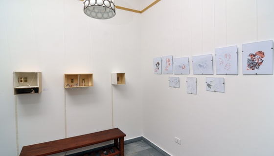

Retomando sus actividades, luego de una interrupción invernal, Bellefour V reúne los sabores de Italia, los sonidos de España del sur, una charla sobre el sistema monetario, y las creaciones de dos artistas locales que comparten un taller en Villa Crespo.
Con muchos años de asistir a un taller de escultura, las experiencias de Julieta La Valle en la disciplina la han dirigido a juguetear con extremos de escala y detalle: de lo colosal a lo minúsculo, de lo minimalista a lo decorativo. Para Bellefour V, La Valle muestra una serie de escenas domésticas autoreferenciales que cierran la brecha entre maquetas y escultura.
Los mundos interiores de La Valle que albergan figuras de monocromo en situaciones aparentemente cotidianas que al mismo tiempo atraen y personifican algo profundamente desconcertante. Somos una fuerza colosal que mira en la esfera doméstica de la miniatura, una presencia no convidada e invasiva. La interrupción del orden común de tamaño causa una cesura en el santuario que deriva normalmente del conocimiento de que nuestro ambiente y nuestros cuerpos están en escala uno con el otro.
Esto es ciertamente verdad en Gulliver, el protagonista de la novela de Jonathan Swift, que se encuentra con las naciones remotas cuyos habitantes causan que vuelva a considerar su propia escala en relación al mundo. La experiencia de Gulliver como un gigante en la isla de Lilliput es puesta en contradicción una vez que naufraga y llega a derivar en la isla de Brobingnag donde su estatura lo coloca a sólo 1/12th del tamaño de los nativos. Los gobernantes de Brobingnag acomodan a Gulliver en una casa especialmente construida, a la que es llevado y exhibido como un espécimen, una curiosidad. Hay algo singular y curioso en observar un microcosmos desde la posición del gigante: al procesar una escena en su totalidad, podemos convertir el ambiente en un lugar interno, íntimo – un espacio de la contemplación mas que de la acción.
La práctica de creación de imágenes de Isasa, la conduce a un proceso que extrae formas naturales y arreglos, y libera una forma más pura desde adentro. Sus abstracciones, a pesar de sus orígenes, se convierten en no-objetivas y auto-referenciales, cautivando la esencia de los primeros abstraccionistas. Malevich escribió acerca de la visualización de “un estado de sentimiento”, de la creación de un sentido de belleza y asombro, a través de las abstracciones, un medio para ser transportado a otra dimensión.
“Mi recorrido plástico siempre parte de un campo real de percepciones poco estructurado que me sirve como estímulo para dar vida a una imagen propia, generada desde el inconsciente.
En el presente trabajo, el punto de partida fueron los broches de gancho. Esos broches de mercería que se usan de a pares -macho/hembra- y que permiten cerrar la abertura de una prenda. Desde chica me era placentero introducir la mano en un cajoncito de la vieja máquina de coser y revolver esos brochecitos que dormían ahí.
Destinados ya a ser parte de mi obra -desparramados, amontonados, superpuestos, escapando, cayendo, abrazándose- generaron imágenes que creí únicas. Mi mayor sorpresa fue encontrar que esas imágenes ya existían: En libros de Biología, correspondían a un órgano, o a un tejido, o a una célula. Lo lejano se había hecho cercano. Lo exterior se convirtió en interior. Y se plegó en capas y tramas que se suman, se unen y se superponen como en un organismo.
La actual obra es, tal vez, eso: Las partes y el todo. El todo y las partes.”
- Agustina Isasa, 2012
Luthier Tomas Fiore presentará su talento tanto como músico como productor de instrumentos artesanales hechos a mano. Su produccion atraviesa una gran gama de instrumentos, desde guitarras románticas del siglo XIX a ukeleles de tenor, e implica un proceso de creación que no podria estar mas antitético de la producción en línea de fábrica y a la fuerza mecánica que a menudo tienen que ver tanto con productos contemporáneos.
Con la guitarra, Fiore trae a Bellefour ejemplos de ‘palos’ (subgéneros) del estilo flamenco, una forma cultural que se origina en Andalucía. Lo más notable del estilo es que no está definido por una sola disciplina o sonido, si no mas bien que compila una variedad de elementos: toque, canto y baile, como tambien la puntuación de palmadas. Las raíces del estilo son un aporte del movimiento de la comunidad Romaní, que viajaron al sur del España, donde se encontraron con otros grupos étnicos de Europa y África.
La fusión de culturas llegó a un punto culminante durante el siglo XV cuando el Rey Fernando V y la Reina Isabel insistieron en una doctrina religiosa que forzaría a cada ciudadano de España a conformarse al catolicismo. La amenaza real de ejecución, como pena por el no acatamiento de esta orden, , sirvió para reforzar los lazos entre las minotias y genero un gran intercambio cultural entre ellos, forjando un estilo que por su composicion multidosciplinaria, reflejaba sus diversas raices.
‘El Sistema Monetario’ charla que desarrollará el actor y crítico literario Damian Martín Ramallo, girará en torno a diversos interrogantes sobre el sistema pecuniario. Poniendo en perspectiva los 7000 años de historia de la moneda, Ramallo discutirá su relación con las filosofias politicas, los límites de su influencia y el impacto de los sistemas privados inmersos en el mundo público. En contra de las políticas e instituciones gubernamentales preexistentes, hay una propuesta resumida por el científico y futurista Jacque Fresco en su Proyecto de Venus. Fresco ha diseñado una estructura para un sistema socioeconómico donde el dinero pasaría a ser obsoleto. Este mundo funcionaría de una manera sostenible, eficiente y cooperativa, basada en el intercambio de recursos.
Presentando platos nacionales icónicos de su patria, Simone Tufano ha creado un menú para Bellefour que incluye tortellini casera de papa, nueces y ricotta, calzone napolitano y pizza margarita. Las raíces familiares de Tufano, de Italia del sur, y sus años viviendo y trabajando como un sfoglino (fabricante profesional de pastas) en Bolonia, le dejó una habilidad culinaria que ensambla lo natural y lo cultural.
Tufano ganó imnumerables premios. Primer premio en el Mattarello d’Oro (el campeonato italiano para el sfoglini) y el Tortellini d’Oro. También el segundo premio en el campeonato internacional Lo Sfoglino d’Oro. Trabajó extensamente como maestro de pastas en una escuela culinaria muy conocida, La Vecchia Scuola en Bolonia, que se enorgullece por transmitir métodos tradicionales en la producción de las pastas caseras.
- Ramsey Arnaoot & Kat Sapera, octubre 2012